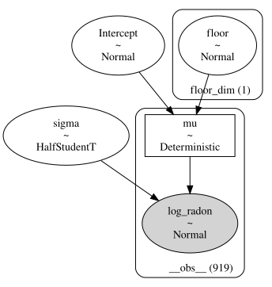
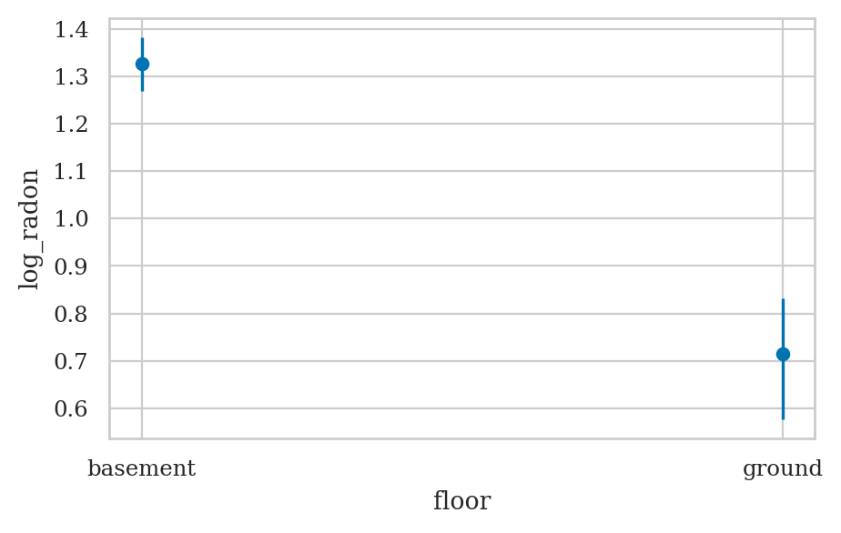
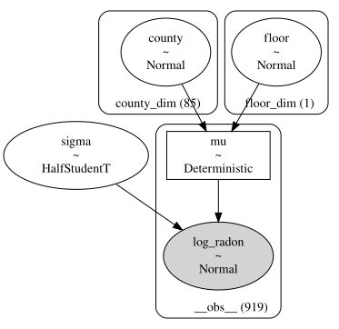
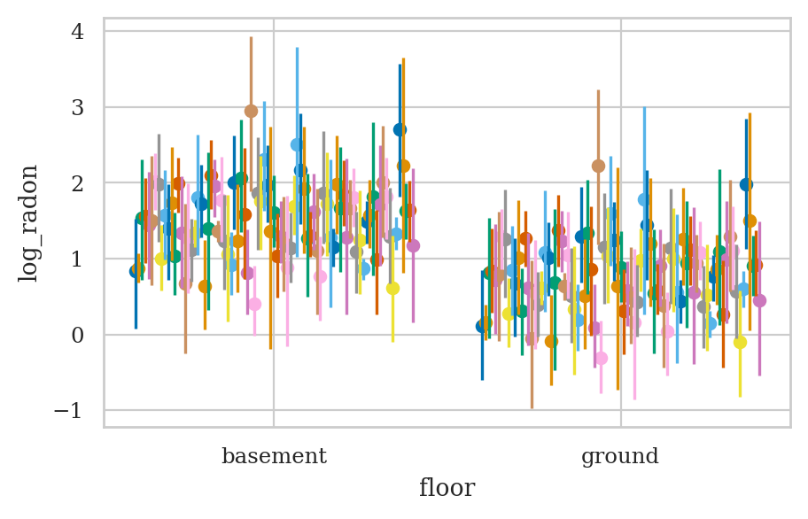
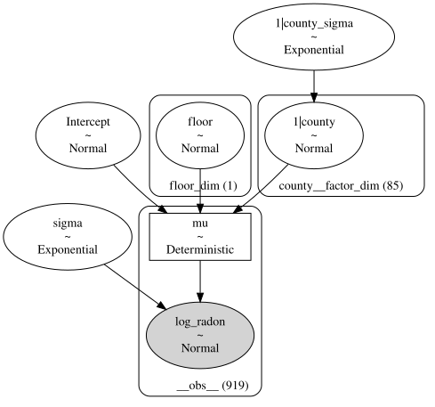

Section 5.5 — Hierarchical models#
This notebook contains the code examples from Section 5.5 Hierarchical models from the No Bullshit Guide to Statistics.
See also:
https://mc-stan.org/users/documentation/case-studies/radon_cmdstanpy_plotnine.html#data-prep
https://www.pymc.io/projects/examples/en/latest/generalized_linear_models/multilevel_modeling.html
Notebook setup#
# load Python modules
import os
import numpy as np
import pandas as pd
import seaborn as sns
import matplotlib.pyplot as plt
# Figures setup
plt.clf() # needed otherwise `sns.set_theme` doesn"t work
from plot_helpers import RCPARAMS
RCPARAMS.update({"figure.figsize": (5, 3)}) # good for screen
# RCPARAMS.update({"figure.figsize": (5, 1.6)}) # good for print
sns.set_theme(
context="paper",
style="whitegrid",
palette="colorblind",
rc=RCPARAMS,
)
# High-resolution please
%config InlineBackend.figure_format = "retina"
# Where to store figures
DESTDIR = "figures/bayes/hierarchical"
<Figure size 640x480 with 0 Axes>
# set random seed for repeatability
np.random.seed(42)
#######################################################
# silence statsmodels kurtosistest warning when using n < 20
import warnings
warnings.filterwarnings("ignore", category=FutureWarning)
Definitions#
Model#
Radon dataset#
https://bambinos.github.io/bambi/notebooks/radon_example.html
Description: Contains measurements of radon levels in homes across various counties.
Source: Featured in Andrew Gelman and Jennifer Hill’s book Data Analysis Using Regression and Multilevel/Hierarchical Models.
Application: Demonstrates partial pooling and varying intercepts/slopes in hierarchical modeling.
Loading the data#
radon = pd.read_csv("../datasets/radon.csv")
radon
| idnum | state | county | floor | log_radon | log_uranium | |
|---|---|---|---|---|---|---|
| 0 | 5081 | MN | AITKIN | ground | 0.788457 | -0.689048 |
| 1 | 5082 | MN | AITKIN | basement | 0.788457 | -0.689048 |
| 2 | 5083 | MN | AITKIN | basement | 1.064711 | -0.689048 |
| 3 | 5084 | MN | AITKIN | basement | 0.000000 | -0.689048 |
| 4 | 5085 | MN | ANOKA | basement | 1.131402 | -0.847313 |
| ... | ... | ... | ... | ... | ... | ... |
| 914 | 5995 | MN | WRIGHT | basement | 1.856298 | -0.090024 |
| 915 | 5996 | MN | WRIGHT | basement | 1.504077 | -0.090024 |
| 916 | 5997 | MN | WRIGHT | basement | 1.609438 | -0.090024 |
| 917 | 5998 | MN | YELLOW MEDICINE | basement | 1.308333 | 0.355287 |
| 918 | 5999 | MN | YELLOW MEDICINE | basement | 1.064711 | 0.355287 |
919 rows × 6 columns
Complete pooling model#
= common linear regression model for all counties
We can pool all the data and estimate one big regression to asses the influence of the floor variable on radon levels across all counties.
The variable \(x\) corresponds to the floor column,
with \(0\) representing basement, and \(1\) representing ground floor.
By ignoring the county feature, we do not differenciate on counties.
import bambi as bmb
priors1 = {}
mod1 = bmb.Model("log_radon ~ 1 + floor", data=radon)
WARNING (pytensor.tensor.blas): Using NumPy C-API based implementation for BLAS functions.
mod1
Formula: log_radon ~ 1 + floor
Family: gaussian
Link: mu = identity
Observations: 919
Priors:
target = mu
Common-level effects
Intercept ~ Normal(mu: 1.2246, sigma: 2.3354)
floor ~ Normal(mu: 0.0, sigma: 5.7237)
Auxiliary parameters
sigma ~ HalfStudentT(nu: 4.0, sigma: 0.8529)
mod1.build()
mod1.graph()

idata1 = mod1.fit()
Initializing NUTS using jitter+adapt_diag...
Multiprocess sampling (2 chains in 2 jobs)
NUTS: [sigma, Intercept, floor]
Sampling 2 chains for 1_000 tune and 1_000 draw iterations (2_000 + 2_000 draws total) took 2 seconds.
We recommend running at least 4 chains for robust computation of convergence diagnostics
import arviz as az
az.summary(idata1)
| mean | sd | hdi_3% | hdi_97% | mcse_mean | mcse_sd | ess_bulk | ess_tail | r_hat | |
|---|---|---|---|---|---|---|---|---|---|
| sigma | 0.823 | 0.019 | 0.787 | 0.859 | 0.000 | 0.000 | 2802.0 | 1340.0 | 1.0 |
| Intercept | 1.326 | 0.030 | 1.269 | 1.382 | 0.001 | 0.000 | 3203.0 | 1794.0 | 1.0 |
| floor[ground] | -0.611 | 0.074 | -0.745 | -0.466 | 0.001 | 0.001 | 3564.0 | 1498.0 | 1.0 |
bmb.interpret.plot_predictions(mod1, idata1, "floor");
Default computed for conditional variable: floor
{kind=link}

No pooling model#
= separate intercept for each county
If we treat different counties as independent, so each one gets an intercept term:
priors2 = None
# {
# "county:floor": bmb.Prior("Normal", mu=0, sigma=10),
# "sigma": bmb.Prior("Exponential", lam=1),
# }
mod2 = bmb.Model("log_radon ~ 0 + county + floor",
priors=priors2,
data=radon)
# mod2
mod2.build()
mod2.graph()

idata2 = mod2.fit()
Initializing NUTS using jitter+adapt_diag...
Multiprocess sampling (2 chains in 2 jobs)
NUTS: [sigma, county, floor]
Sampling 2 chains for 1_000 tune and 1_000 draw iterations (2_000 + 2_000 draws total) took 5 seconds.
We recommend running at least 4 chains for robust computation of convergence diagnostics
az.plot_forest(data=idata2, figsize=(6, 10), combined=True, textsize=6);
{kind=link}
fig, axs = bmb.interpret.plot_predictions(mod2, idata2, ["floor", "county"]);
axs[0].get_legend().remove()
Default computed for conditional variable: floor, county
{kind=link}

post2 = idata2["posterior"]
unpooled_means = post2.mean(dim=("chain", "draw"))
unpooled_hdi = az.hdi(idata2)
unpooled_means_iter = unpooled_means.sortby("county")
unpooled_hdi_iter = unpooled_hdi.sortby(unpooled_means_iter.county)
_, ax = plt.subplots(figsize=(12, 5))
unpooled_means_iter.plot.scatter(x="county_dim", y="county", ax=ax, alpha=0.9)
ax.vlines(
np.arange(len(radon["county"].unique())),
unpooled_hdi_iter.county.sel(hdi="lower"),
unpooled_hdi_iter.county.sel(hdi="higher"),
color="orange",
alpha=0.6,
)
ax.set(ylabel="Radon estimate", ylim=(-2, 4.5))
ax.tick_params(rotation=90);
{kind=link}
Hierarchical model#
= partial pooling model = varying intercepts model
The partial pooling formula estimates per-county intercepts which drawn
from the same distribution which is estimated jointly with the rest of
the model parameters. The 1 is the intercept co-efficient. The
estimates across counties will all have the same slope.
log_radon ~ 1 + (1|county_id) + floor
There is a middle ground to both of these extremes. Specifically, we may assume that the intercepts are different for each county as in the unpooled case, but they are drawn from the same distribution. The different counties are effectively sharing information through the common prior.
NOTE: some counties have very few sample; the hierarchical model will provide “shrinkage” for these groups, and use global information learned from all counties
Bayesian model#
TODO: add formulas
Bambi model#
priors3 = {
# "Intercept": bmb.Prior("Normal", mu=0, sigma=10),
"floor": bmb.Prior("Normal", mu=0, sigma=10),
"1|county": bmb.Prior("Normal", mu=0, sigma=bmb.Prior("Exponential", lam=1)),
"sigma": bmb.Prior("Exponential", lam=1),
# "sigma": bmb.Prior("HalfNormal", sigma=10), # from PyStan tutorial
# "sigma": bmb.Prior("Uniform", lower=0, upper=100), # from PyMC example
}
mod3 = bmb.Model(formula="log_radon ~ 1 + (1|county) + floor",
priors=priors3,
data=radon,
noncentered=False)
mod3
Formula: log_radon ~ 1 + (1|county) + floor
Family: gaussian
Link: mu = identity
Observations: 919
Priors:
target = mu
Common-level effects
Intercept ~ Normal(mu: 1.2246, sigma: 2.1322)
floor ~ Normal(mu: 0.0, sigma: 10.0)
Group-level effects
1|county ~ Normal(mu: 0.0, sigma: Exponential(lam: 1.0))
Auxiliary parameters
sigma ~ Exponential(lam: 1.0)
mod3.build()
mod3.graph()

Model fitting and analysis#
idata3 = mod3.fit(draws=2000, tune=2000, target_accept=0.9)
Initializing NUTS using jitter+adapt_diag...
Multiprocess sampling (2 chains in 2 jobs)
NUTS: [sigma, Intercept, floor, 1|county_sigma, 1|county]
Sampling 2 chains for 2_000 tune and 2_000 draw iterations (4_000 + 4_000 draws total) took 10 seconds.
We recommend running at least 4 chains for robust computation of convergence diagnostics
The group level parameters
az.summary(idata3).head(5)
| mean | sd | hdi_3% | hdi_97% | mcse_mean | mcse_sd | ess_bulk | ess_tail | r_hat | |
|---|---|---|---|---|---|---|---|---|---|
| sigma | 0.757 | 0.019 | 0.721 | 0.791 | 0.000 | 0.000 | 7756.0 | 2810.0 | 1.0 |
| Intercept | 1.461 | 0.054 | 1.366 | 1.565 | 0.001 | 0.001 | 2436.0 | 2719.0 | 1.0 |
| floor[ground] | -0.691 | 0.072 | -0.833 | -0.566 | 0.001 | 0.001 | 8772.0 | 3425.0 | 1.0 |
| 1|county_sigma | 0.333 | 0.047 | 0.247 | 0.418 | 0.001 | 0.001 | 1559.0 | 2331.0 | 1.0 |
| 1|county[AITKIN] | -0.276 | 0.249 | -0.747 | 0.192 | 0.003 | 0.003 | 7753.0 | 2859.0 | 1.0 |
az.summary(idata3).tail(5)
| mean | sd | hdi_3% | hdi_97% | mcse_mean | mcse_sd | ess_bulk | ess_tail | r_hat | |
|---|---|---|---|---|---|---|---|---|---|
| 1|county[WATONWAN] | 0.449 | 0.274 | -0.058 | 0.958 | 0.003 | 0.003 | 6760.0 | 2701.0 | 1.0 |
| 1|county[WILKIN] | 0.120 | 0.317 | -0.475 | 0.722 | 0.003 | 0.006 | 10012.0 | 2586.0 | 1.0 |
| 1|county[WINONA] | 0.111 | 0.182 | -0.250 | 0.433 | 0.002 | 0.003 | 7718.0 | 3006.0 | 1.0 |
| 1|county[WRIGHT] | 0.130 | 0.180 | -0.206 | 0.464 | 0.002 | 0.003 | 7791.0 | 2768.0 | 1.0 |
| 1|county[YELLOW MEDICINE] | -0.073 | 0.280 | -0.565 | 0.507 | 0.003 | 0.005 | 9934.0 | 2855.0 | 1.0 |
The intercept offsets for each county are:
sum( idata3["posterior"]["1|county"].stack(sample=("chain","draw")).values.mean(axis=1) )
-0.028602286551284606
az.plot_forest(idata3, combined=True, figsize=(7,2),
var_names=["Intercept", "floor", "1|county_sigma", "sigma"]);
{kind=link}
az.plot_forest(idata3, var_names=["1|county"], combined=True);
{kind=link}
Compare models#
import xarray as xr
sample_counties = (
"LAC QUI PARLE",
"AITKIN",
"KOOCHICHING",
"DOUGLAS",
"CLAY",
"STEARNS",
"RAMSEY",
"ST LOUIS",
)
# completely pooled means
post_mean = idata1.posterior.mean(dim=("chain", "draw"))
# unpooled_means
unpooled_means = idata2.posterior.mean(dim=("chain", "draw"))
fig, axes = plt.subplots(2, 4, figsize=(12, 6), sharey=True, sharex=True)
axes = axes.flatten()
m = unpooled_means["floor"]
for i, c in enumerate(sample_counties):
y = radon.log_radon[radon.county == c]
x = radon.floor[radon.county == c]
x = x.map({"basement":0, "ground":1})
axes[i].scatter(x + np.random.randn(len(x)) * 0.01, y, alpha=0.4)
# No pooling model
b = unpooled_means["county"].sel(county_dim=c)
# Plot both models and data
xvals = xr.DataArray(np.linspace(0, 1))
axes[i].plot(xvals, m.values * xvals + b.values)
axes[i].plot(xvals, post_mean["floor"].values * xvals + post_mean["Intercept"], "r--")
# partial pooling
post = idata3.posterior.sel(county__factor_dim=c).mean(dim=("chain", "draw"))
# When using 0 + floor model
# slope = post.floor.values[1] - post.floor.values[0]
# theta = post["1|county"].values + post.floor.values[0] + slope * xvals
# When using 1 + floor model
slope = post["floor"].values[0]
theta = post["1|county"].values + post["Intercept"] + slope * xvals
axes[i].plot(xvals, theta, "k:")
axes[i].set_xticks([0, 1])
axes[i].set_xticklabels(["basement", "ground"])
axes[i].set_ylim(-1, 3)
axes[i].set_title(c)
if not i % 2:
axes[i].set_ylabel("log radon level")
{kind=link}
Conclusions#
Explanations#
Varying intercepts and slopes model#
The varying-slope, varying intercept model adds floor to the
group-level co-efficients. Now estimates across counties will all have
varying slope.
log_radon ~ floor + (1 + floor | county_id)
mod4 = bmb.Model("log_radon ~ (1 + floor | county)",
data=radon, noncentered=False)
mod4
Formula: log_radon ~ (1 + floor | county)
Family: gaussian
Link: mu = identity
Observations: 919
Priors:
target = mu
Common-level effects
Intercept ~ Normal(mu: 1.2246, sigma: 2.1322)
Group-level effects
1|county ~ Normal(mu: 0.0, sigma: HalfNormal(sigma: 2.1322))
floor|county ~ Normal(mu: 0.0, sigma: HalfNormal(sigma: 5.7237))
Auxiliary parameters
sigma ~ HalfStudentT(nu: 4.0, sigma: 0.8529)
idata4 = mod4.fit()
Initializing NUTS using jitter+adapt_diag...
Multiprocess sampling (2 chains in 2 jobs)
NUTS: [sigma, Intercept, 1|county_sigma, 1|county, floor|county_sigma, floor|county]
Sampling 2 chains for 1_000 tune and 1_000 draw iterations (2_000 + 2_000 draws total) took 6 seconds.
We recommend running at least 4 chains for robust computation of convergence diagnostics
az.autocorr(idata4["posterior"]["sigma"].values.flatten())[0:10]
array([ 1. , -0.21790689, 0.07933156, 0.03319924, -0.01006564,
0.02865509, -0.01132197, 0.03038842, -0.06439405, 0.0122678 ])
az.summary(idata4)
| mean | sd | hdi_3% | hdi_97% | mcse_mean | mcse_sd | ess_bulk | ess_tail | r_hat | |
|---|---|---|---|---|---|---|---|---|---|
| sigma | 0.747 | 0.020 | 0.707 | 0.782 | 0.000 | 0.000 | 2381.0 | 1639.0 | 1.0 |
| Intercept | 1.401 | 0.054 | 1.293 | 1.495 | 0.001 | 0.001 | 1519.0 | 1595.0 | 1.0 |
| 1|county_sigma | 0.333 | 0.048 | 0.245 | 0.424 | 0.002 | 0.001 | 727.0 | 885.0 | 1.0 |
| 1|county[AITKIN] | -0.309 | 0.250 | -0.762 | 0.155 | 0.005 | 0.004 | 2489.0 | 1607.0 | 1.0 |
| 1|county[ANOKA] | -0.465 | 0.113 | -0.684 | -0.263 | 0.002 | 0.002 | 2195.0 | 1262.0 | 1.0 |
| ... | ... | ... | ... | ... | ... | ... | ... | ... | ... |
| floor|county[ground, WATONWAN] | 0.257 | 0.461 | -0.618 | 1.084 | 0.007 | 0.010 | 3886.0 | 1398.0 | 1.0 |
| floor|county[ground, WILKIN] | 0.016 | 0.761 | -1.447 | 1.427 | 0.012 | 0.019 | 3851.0 | 1375.0 | 1.0 |
| floor|county[ground, WINONA] | -1.356 | 0.420 | -2.149 | -0.574 | 0.008 | 0.006 | 2518.0 | 1560.0 | 1.0 |
| floor|county[ground, WRIGHT] | -0.360 | 0.520 | -1.297 | 0.621 | 0.009 | 0.010 | 3158.0 | 1357.0 | 1.0 |
| floor|county[ground, YELLOW MEDICINE] | 0.019 | 0.722 | -1.298 | 1.371 | 0.011 | 0.017 | 4124.0 | 1568.0 | 1.0 |
174 rows × 9 columns
az.plot_forest(idata4, var_names=["1|county"], combined=True);
{kind=link}
az.plot_forest(idata4, var_names=["floor|county"], combined=True);
{kind=link}
Frequentist approach#
We can use statsmodels to fit multilevel models too.
Varying intercepts model using statsmodels#
import statsmodels.formula.api as smf
sm1 = smf.mixedlm("log_radon ~ 0 + floor",
groups="county",
data=radon)
res1 = sm1.fit()
res1.summary()
| Model: | MixedLM | Dependent Variable: | log_radon |
| No. Observations: | 919 | Method: | REML |
| No. Groups: | 85 | Scale: | 0.5709 |
| Min. group size: | 1 | Log-Likelihood: | -1085.6526 |
| Max. group size: | 116 | Converged: | Yes |
| Mean group size: | 10.8 |
| Coef. | Std.Err. | z | P>|z| | [0.025 | 0.975] | |
|---|---|---|---|---|---|---|
| floor[basement] | 1.462 | 0.052 | 28.164 | 0.000 | 1.360 | 1.563 |
| floor[ground] | 0.769 | 0.074 | 10.339 | 0.000 | 0.623 | 0.914 |
| county Var | 0.108 | 0.041 |
# slope
res1.params["floor[ground]"] - res1.params["floor[basement]"]
-0.6929937406558037
# sigma-hat
np.sqrt(res1.scale)
0.7555891484188185
# standard deviation of the variability among county-specific Intercepts
county_var = float(res1.summary().tables[1].loc["county Var","Coef."])
assert county_var != res1.params["county Var"] # BUG??
np.sqrt(county_var)
0.3286335345030997
# compare Intercept for first country in res1 to the Bayesian estimate
res1.random_effects["AITKIN"].values, \
az.summary(idata3, group="posterior",
var_names=["1|county"],
coords={"county__factor_dim":"AITKIN"}).iloc[0,0]
(array([-0.27009756]), -0.276)
Varying intercepts and slopes model using statsmodels#
import statsmodels.formula.api as smf
sm2 = smf.mixedlm("log_radon ~ 0 + floor", # Fixed effects (no intercept and floor as a fixed effect)
groups="county", # Grouping variable for random effects
re_formula="1 + floor", # Random effects: 1 for intercept, floor for slope
data=radon)
res2 = sm2.fit()
res2.summary()
| Model: | MixedLM | Dependent Variable: | log_radon |
| No. Observations: | 919 | Method: | REML |
| No. Groups: | 85 | Scale: | 0.5567 |
| Min. group size: | 1 | Log-Likelihood: | -1084.1623 |
| Max. group size: | 116 | Converged: | Yes |
| Mean group size: | 10.8 |
| Coef. | Std.Err. | z | P>|z| | [0.025 | 0.975] | |
|---|---|---|---|---|---|---|
| floor[basement] | 1.463 | 0.054 | 26.977 | 0.000 | 1.356 | 1.569 |
| floor[ground] | 0.782 | 0.085 | 9.208 | 0.000 | 0.615 | 0.948 |
| county Var | 0.122 | 0.049 | ||||
| county x floor[T.ground] Cov | -0.040 | 0.057 | ||||
| floor[T.ground] Var | 0.118 | 0.120 |
# slope
res2.params["floor[ground]"] - res2.params["floor[basement]"]
-0.6810977572101952
# sigma-hat
np.sqrt(res2.scale)
0.7461559982563548
# standard deviation of the variability among county-specific Intercepts
county_var_int = float(res2.summary().tables[1].loc["county Var","Coef."])
np.sqrt(county_var_int)
0.3492849839314596
# standard deviation of the variability among county-specific slopes
county_var_slopes = float(res2.summary().tables[1].loc["floor[T.ground] Var","Coef."])
np.sqrt(county_var_slopes)
0.34351128074635334
# correlation between Intercept and slope group-level coefficients
county_floor_cov = float(res2.summary().tables[1].loc["county x floor[T.ground] Cov","Coef."])
county_floor_cov / (np.sqrt(county_var_int)*np.sqrt(county_var_slopes))
-0.3333796392769246
# TODO: compare Intercept for first country in res1 to the Bayesian estimate
# res2.random_effects["AITKIN"], \
# az.summary(idata1, group="posterior",
# var_names=["1|county"],
# coords={"county__factor_dim":"AITKIN"}).iloc[0,0]
Discussion#
Exercises#
Exercise: mod1u#
Same model as Example 1 but also include the predictor log_uranium.
import bambi as bmb
covariate_priors = {
"floor": bmb.Prior("Normal", mu=0, sigma=10),
"log_uranium": bmb.Prior("Normal", mu=0, sigma=10),
"1|county": bmb.Prior("Normal", mu=0, sigma=bmb.Prior("Exponential", lam=1)),
"sigma": bmb.Prior("Exponential", lam=1),
}
mod1u = bmb.Model(formula="log_radon ~ 0 + floor + (1|county) + log_uranium",
priors=covariate_priors,
data=radon)
mod1u
Formula: log_radon ~ 0 + floor + (1|county) + log_uranium
Family: gaussian
Link: mu = identity
Observations: 919
Priors:
target = mu
Common-level effects
floor ~ Normal(mu: 0.0, sigma: 10.0)
log_uranium ~ Normal(mu: 0.0, sigma: 10.0)
Group-level effects
1|county ~ Normal(mu: 0.0, sigma: Exponential(lam: 1.0))
Auxiliary parameters
sigma ~ Exponential(lam: 1.0)
Exercise: pigs dataset#
https://bambinos.github.io/bambi/notebooks/multi-level_regression.html
import statsmodels.api as sm
dietox = sm.datasets.get_rdataset("dietox", "geepack").data
dietox
| Pig | Evit | Cu | Litter | Start | Weight | Feed | Time | |
|---|---|---|---|---|---|---|---|---|
| 0 | 4601 | Evit000 | Cu000 | 1 | 26.5 | 26.50000 | NaN | 1 |
| 1 | 4601 | Evit000 | Cu000 | 1 | 26.5 | 27.59999 | 5.200005 | 2 |
| 2 | 4601 | Evit000 | Cu000 | 1 | 26.5 | 36.50000 | 17.600000 | 3 |
| 3 | 4601 | Evit000 | Cu000 | 1 | 26.5 | 40.29999 | 28.500000 | 4 |
| 4 | 4601 | Evit000 | Cu000 | 1 | 26.5 | 49.09998 | 45.200001 | 5 |
| ... | ... | ... | ... | ... | ... | ... | ... | ... |
| 856 | 8442 | Evit000 | Cu175 | 24 | 25.7 | 73.19995 | 83.800003 | 8 |
| 857 | 8442 | Evit000 | Cu175 | 24 | 25.7 | 81.69995 | 99.800003 | 9 |
| 858 | 8442 | Evit000 | Cu175 | 24 | 25.7 | 90.29999 | 115.200001 | 10 |
| 859 | 8442 | Evit000 | Cu175 | 24 | 25.7 | 96.00000 | 133.200001 | 11 |
| 860 | 8442 | Evit000 | Cu175 | 24 | 25.7 | 103.50000 | 151.400002 | 12 |
861 rows × 8 columns
pigsmodel = bmb.Model("Weight ~ Time + (Time|Pig)", dietox)
pigsidata = pigsmodel.fit()
Initializing NUTS using jitter+adapt_diag...
Multiprocess sampling (2 chains in 2 jobs)
NUTS: [sigma, Intercept, Time, 1|Pig_sigma, 1|Pig_offset, Time|Pig_sigma, Time|Pig_offset]
Sampling 2 chains for 1_000 tune and 1_000 draw iterations (2_000 + 2_000 draws total) took 14 seconds.
We recommend running at least 4 chains for robust computation of convergence diagnostics
The rhat statistic is larger than 1.01 for some parameters. This indicates problems during sampling. See https://arxiv.org/abs/1903.08008 for details
az.summary(pigsidata, var_names=["Intercept", "Time", "1|Pig_sigma", "Time|Pig_sigma", "sigma"])
| mean | sd | hdi_3% | hdi_97% | mcse_mean | mcse_sd | ess_bulk | ess_tail | r_hat | |
|---|---|---|---|---|---|---|---|---|---|
| Intercept | 15.712 | 0.583 | 14.633 | 16.800 | 0.030 | 0.021 | 387.0 | 739.0 | 1.00 |
| Time | 6.943 | 0.085 | 6.793 | 7.104 | 0.005 | 0.003 | 307.0 | 601.0 | 1.01 |
| 1|Pig_sigma | 4.553 | 0.431 | 3.758 | 5.388 | 0.017 | 0.012 | 670.0 | 994.0 | 1.00 |
| Time|Pig_sigma | 0.662 | 0.064 | 0.546 | 0.777 | 0.003 | 0.002 | 563.0 | 645.0 | 1.00 |
| sigma | 2.461 | 0.064 | 2.334 | 2.569 | 0.001 | 0.001 | 2505.0 | 1746.0 | 1.00 |
Exercise: educational data#
cf. https://mc-stan.org/users/documentation/case-studies/tutorial_rstanarm.html
1.1 Data example We will be analyzing the Gcsemv dataset (Rasbash et al. 2000) from the mlmRev package in R. The data include the General Certificate of Secondary Education (GCSE) exam scores of 1,905 students from 73 schools in England on a science subject. The Gcsemv dataset consists of the following 5 variables:
school: school identifier
student: student identifier
gender: gender of a student (M: Male, F: Female)
written: total score on written paper
course: total score on coursework paper
import pyreadr
# Gcsemv_r = pyreadr.read_r('/Users/ivan/Downloads/mlmRev/data/Gcsemv.rda')
# Gcsemv_r["Gcsemv"].dropna().to_csv("../datasets/gcsemv.csv", index=False)
gcsemv = pd.read_csv("../datasets/gcsemv.csv")
gcsemv.head()
---------------------------------------------------------------------------
ModuleNotFoundError Traceback (most recent call last)
Cell In[49], line 1
----> 1 import pyreadr
3 # Gcsemv_r = pyreadr.read_r('/Users/ivan/Downloads/mlmRev/data/Gcsemv.rda')
4 # Gcsemv_r["Gcsemv"].dropna().to_csv("../datasets/gcsemv.csv", index=False)
6 gcsemv = pd.read_csv("../datasets/gcsemv.csv")
ModuleNotFoundError: No module named 'pyreadr'
import bambi as bmb
m1 = bmb.Model(formula="course ~ 1 + (1 | school)", data=gcsemv)
m1
Formula: course ~ 1 + (1 | school)
Family: gaussian
Link: mu = identity
Observations: 1523
Priors:
target = mu
Common-level effects
Intercept ~ Normal(mu: 73.3814, sigma: 41.0781)
Group-level effects
1|school ~ Normal(mu: 0.0, sigma: HalfNormal(sigma: 41.0781))
Auxiliary parameters
sigma ~ HalfStudentT(nu: 4.0, sigma: 16.4312)
idata_m1 = m1.fit()
Auto-assigning NUTS sampler...
Initializing NUTS using jitter+adapt_diag...
Multiprocess sampling (4 chains in 4 jobs)
NUTS: [sigma, Intercept, 1|school_sigma, 1|school_offset]
Sampling 4 chains for 1_000 tune and 1_000 draw iterations (4_000 + 4_000 draws total) took 3 seconds.
az.summary(idata_m1)
| mean | sd | hdi_3% | hdi_97% | mcse_mean | mcse_sd | ess_bulk | ess_tail | r_hat | |
|---|---|---|---|---|---|---|---|---|---|
| 1|school[20920] | -6.970 | 5.210 | -16.900 | 2.669 | 0.067 | 0.058 | 6011.0 | 2939.0 | 1.0 |
| 1|school[22520] | -15.654 | 2.122 | -19.806 | -11.760 | 0.046 | 0.032 | 2128.0 | 2404.0 | 1.0 |
| 1|school[22710] | 6.364 | 3.738 | -0.573 | 13.293 | 0.052 | 0.042 | 5237.0 | 2992.0 | 1.0 |
| 1|school[22738] | -0.724 | 4.380 | -8.833 | 7.805 | 0.057 | 0.073 | 5979.0 | 3025.0 | 1.0 |
| 1|school[22908] | -0.792 | 6.155 | -11.484 | 11.105 | 0.077 | 0.107 | 6382.0 | 2660.0 | 1.0 |
| ... | ... | ... | ... | ... | ... | ... | ... | ... | ... |
| 1|school[84707] | 4.070 | 7.415 | -9.964 | 17.348 | 0.098 | 0.115 | 5741.0 | 2858.0 | 1.0 |
| 1|school[84772] | 8.676 | 3.565 | 1.784 | 15.077 | 0.055 | 0.041 | 4143.0 | 2597.0 | 1.0 |
| 1|school_sigma | 8.799 | 0.931 | 7.044 | 10.488 | 0.033 | 0.023 | 854.0 | 1112.0 | 1.0 |
| Intercept | 73.795 | 1.132 | 71.606 | 75.910 | 0.037 | 0.026 | 943.0 | 1185.0 | 1.0 |
| sigma | 13.980 | 0.265 | 13.486 | 14.473 | 0.004 | 0.002 | 5606.0 | 2756.0 | 1.0 |
76 rows × 9 columns
m3 = bmb.Model(formula="course ~ gender + (1 + gender|school)", data=gcsemv)
m3
Formula: course ~ gender + (1 + gender|school)
Family: gaussian
Link: mu = identity
Observations: 1523
Priors:
target = mu
Common-level effects
Intercept ~ Normal(mu: 73.3814, sigma: 53.4663)
gender ~ Normal(mu: 0.0, sigma: 83.5292)
Group-level effects
1|school ~ Normal(mu: 0.0, sigma: HalfNormal(sigma: 53.4663))
gender|school ~ Normal(mu: 0.0, sigma: HalfNormal(sigma: 83.5292))
Auxiliary parameters
sigma ~ HalfStudentT(nu: 4.0, sigma: 16.4312)
m3.fit()
Auto-assigning NUTS sampler...
Initializing NUTS using jitter+adapt_diag...
Multiprocess sampling (4 chains in 4 jobs)
NUTS: [sigma, Intercept, gender, 1|school_sigma, 1|school_offset, gender|school_sigma, gender|school_offset]
Sampling 4 chains for 1_000 tune and 1_000 draw iterations (4_000 + 4_000 draws total) took 5 seconds.
-
<xarray.Dataset> Size: 5MB Dimensions: (chain: 4, draw: 1000, school__factor_dim: 73, gender_dim: 1, gender__expr_dim: 1) Coordinates: * chain (chain) int64 32B 0 1 2 3 * draw (draw) int64 8kB 0 1 2 3 4 5 ... 995 996 997 998 999 * school__factor_dim (school__factor_dim) <U5 1kB '20920' ... '84772' * gender_dim (gender_dim) <U1 4B 'M' * gender__expr_dim (gender__expr_dim) <U1 4B 'M' Data variables: 1|school (chain, draw, school__factor_dim) float64 2MB -7.747... 1|school_sigma (chain, draw) float64 32kB 8.13 9.85 ... 7.406 8.759 Intercept (chain, draw) float64 32kB 76.72 76.58 ... 76.2 77.55 gender (chain, draw, gender_dim) float64 32kB -8.449 ... -7... gender|school (chain, draw, gender__expr_dim, school__factor_dim) float64 2MB ... gender|school_sigma (chain, draw, gender__expr_dim) float64 32kB 8.557 .... sigma (chain, draw) float64 32kB 13.01 13.27 ... 13.14 13.14 Attributes: created_at: 2024-12-09T19:40:00.319195+00:00 arviz_version: 0.19.0 inference_library: pymc inference_library_version: 5.18.0 sampling_time: 5.353373050689697 tuning_steps: 1000 modeling_interface: bambi modeling_interface_version: 0.14.1.dev12+g3a30784 -
<xarray.Dataset> Size: 496kB Dimensions: (chain: 4, draw: 1000) Coordinates: * chain (chain) int64 32B 0 1 2 3 * draw (draw) int64 8kB 0 1 2 3 4 5 ... 995 996 997 998 999 Data variables: (12/17) acceptance_rate (chain, draw) float64 32kB 0.7881 0.8662 ... 1.0 diverging (chain, draw) bool 4kB False False ... False False energy (chain, draw) float64 32kB 6.367e+03 ... 6.395e+03 energy_error (chain, draw) float64 32kB -0.3435 0.1161 ... -0.6848 index_in_trajectory (chain, draw) int64 32kB 8 -7 -8 -12 ... 10 5 5 11 largest_eigval (chain, draw) float64 32kB nan nan nan ... nan nan ... ... process_time_diff (chain, draw) float64 32kB 0.001571 ... 0.001431 reached_max_treedepth (chain, draw) bool 4kB False False ... False False smallest_eigval (chain, draw) float64 32kB nan nan nan ... nan nan step_size (chain, draw) float64 32kB 0.3778 0.3778 ... 0.2825 step_size_bar (chain, draw) float64 32kB 0.3042 0.3042 ... 0.2984 tree_depth (chain, draw) int64 32kB 4 4 4 4 4 4 ... 4 4 4 4 4 4 Attributes: created_at: 2024-12-09T19:40:00.325433+00:00 arviz_version: 0.19.0 inference_library: pymc inference_library_version: 5.18.0 sampling_time: 5.353373050689697 tuning_steps: 1000 modeling_interface: bambi modeling_interface_version: 0.14.1.dev12+g3a30784 -
<xarray.Dataset> Size: 24kB Dimensions: (__obs__: 1523) Coordinates: * __obs__ (__obs__) int64 12kB 0 1 2 3 4 5 ... 1517 1518 1519 1520 1521 1522 Data variables: course (__obs__) float64 12kB 76.8 87.9 44.4 89.8 ... 91.6 94.4 60.1 82.4 Attributes: created_at: 2024-12-09T19:40:00.326985+00:00 arviz_version: 0.19.0 inference_library: pymc inference_library_version: 5.18.0 modeling_interface: bambi modeling_interface_version: 0.14.1.dev12+g3a30784
Exercise: sleepstudy dataset#
Description: Contains reaction times of subjects under sleep deprivation conditions.
Source: Featured in the R package lme4.
Application: Demonstrates linear mixed-effects modeling with random slopes and intercepts.
https://bambinos.github.io/bambi/notebooks/sleepstudy.html
sleepstudy = bmb.load_data("sleepstudy")
sleepstudy
| Reaction | Days | Subject | |
|---|---|---|---|
| 0 | 249.5600 | 0 | 308 |
| 1 | 258.7047 | 1 | 308 |
| 2 | 250.8006 | 2 | 308 |
| 3 | 321.4398 | 3 | 308 |
| 4 | 356.8519 | 4 | 308 |
| ... | ... | ... | ... |
| 175 | 329.6076 | 5 | 372 |
| 176 | 334.4818 | 6 | 372 |
| 177 | 343.2199 | 7 | 372 |
| 178 | 369.1417 | 8 | 372 |
| 179 | 364.1236 | 9 | 372 |
180 rows × 3 columns
Exercise: tadpoles (BONUS)#
https://www.youtube.com/watch?v=iwVqiiXYeC4
logistic regression model